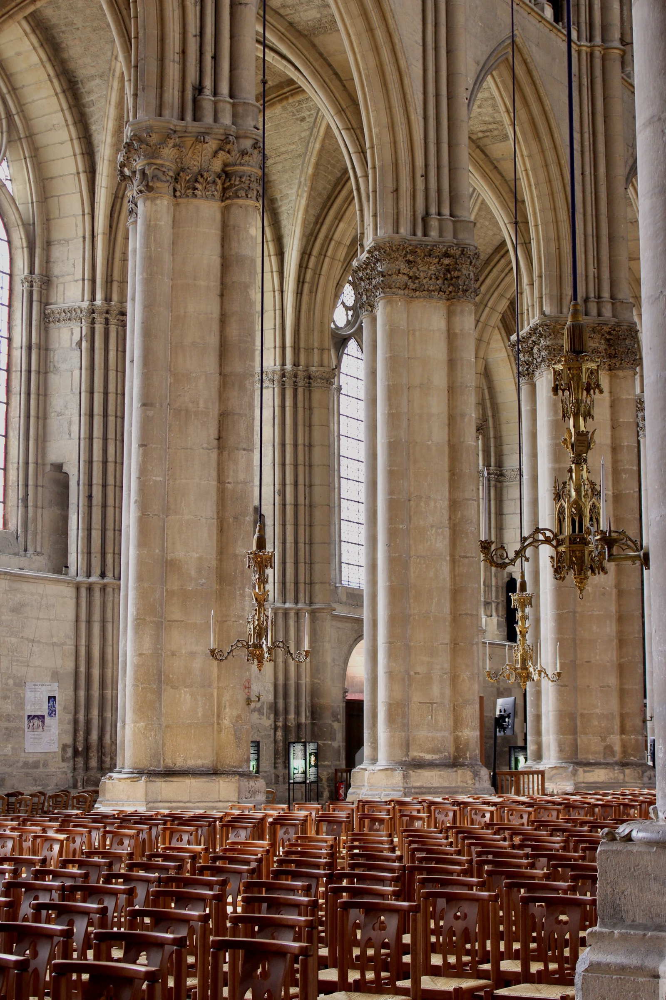

Reims, France
In the small town of champagne, Reims, there is a magnificent piece of architecture, Notre-Dame de Reims. It is the younger sister of Notre-Dame de Paris and far less popular. But I think the Notre-Dame de Reims undoubtably surpasses in beauty and serenity. Notre-Dame de Reims was rebuilt after destruction in WWI and Notre-Dame de Paris is still in construction following the 2019 fire. The effort to rebuild such delicate architecture is just as beautiful as the buildings themselves.